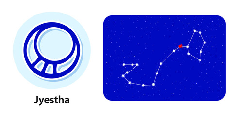

<
1. Pada 1st: Dominated by Jupiter, the first pada of this nakshatra lies in Sagittarius navamsa. The main focus of people born in this pada is earning money. To achieve that, they pursue education. These people also have big and generous hearts.
2. Pada 2nd: Dominated by Saturn and falling in Capricorn navamsa, the people born in this pada are responsible for their actions and do whatever is right and not what seems convenient.
3. Pada 3rd: The third pada of this nakshatra is also dominated by Saturn and lies on the Aquarius navamsa. Being generous and helping those in need is the main indication of people born in this pada. But be careful about the surroundings to avoid unwanted sexual encounters.
4. Pada 4th: The fourth pada of this nakshatra lies in Pisces navamsa and is dominated by Jupiter. They love children and will find themselves interested in exotic science. Though they will have to be careful when dealing with people as they might get overwhelmed by their emotions in certain situations.
“the eldest, most excellent”α, σ, and τ Scorpionis
Lord: Budh (Mercury)
Symbol : circular amulet, umbrella, earring
Deity : Indra, chief of the gods
Stone: Diamond is your lucky stone.
Lucky numbers : 5 and 9
Lucky Day: Monday and Thursday.
If a baby born in this nakshatra give her or him a name with starting letter “N” or “Y”.
These persons should not live in South facing houses.
Persons born in Jyesta nakshatram will have good taarabalam with following nakshatrams:
Magha, Uttara, Chitta, Visakha, Anuradha, Moola, Uttarashada, Dhanishta, Purvabhadra, Uttarabhadra, Aswini, Kritika, Mrigasira,Punarvasu, Pushyami
Indian zodiac: 16°40′ – 30° Vrishchika
Western zodiac 12°40′ – 26° Sagittarius
Jyeshta Nakshatra
Characteristics male
The males born in Jyeshtha Nakshatra are usually very down-to-earth and don’t like to brag about their achievements. Because of this nature, they are oftentimes underestimated by others. These males are very stubborn and do not heed someone else’s opinion. They like doing whatever their conscience is telling them to do. Something to keep in mind while interacting with them is that they are not very good at keeping secrets and will confide in someone else at the first opportunity. Once they find out something very important, it becomes very hard for them to go about their normal life without taking it off their chest. So one should be careful about the things that are being shared with these males. They are also very short-tempered. This results in them hurting people unconsciously.Profession male
Males of this nakshatra are very hardworking and passionate about making a name for themselves. Unlike their peers, they will start looking for jobs or ways of earning money at a much earlier time. They will follow their hearts while building their career. This will result in them being more successful than the people of their age. There are chances that they will leave their homes, either for further education or for job. Even though they will have success in whatever they are doing, they are also going to be fickle-minded about what exactly they want to do. Till the age of 50, they have to struggle quite a bit because of this fickle-mindedness, especially around the age of 18 to 26. They are advised to remain calm and stick to their decisions. After 50, they will be quite comfortable with their situation.Compatibility male
Jyestha nakshatra males will have a difficult life with their families. Relations with their siblings and mother will not be the best, and they will not receive much support from them. Because of their stubbornness, free-minded and independent nature, they won’t be able to form close bonds with their relatives. Although, they will have a very smooth and happy married life with a loving and somewhat dominant wife who won’t tolerate them being drunk in their household.Health male
Apart from some minor health issues such as chronic pains in the hands and shoulders, stomach issues, asthma, dysentery, colds, and fevers, males of this nakshatra won’t have to suffer from any serious problems that might cause them stress.Characteristics female
Females of this nakshatra are very sensitive people and take everything that has been said to them to their hearts. These females care a lot about their appearance and how people view them. What people think about them matters a lot to them, and usually heed their opinions. Females of this nakshatra are very passionate lovers. They love blindly and become crestfallen when they are betrayed in love. They easily get jealous when they are in a relationship. They are also very intelligent and thoughtful about people and situations around them. Along with that, one might never find them in a cluttered environment as they are very organised and like to keep their surroundings clean and tidy.Profession female
Even though they are intelligent and smart, achieving a very good education is not the most important concern for the females of this nakshatra. So their academic qualification will be average and basic, and they will be satisfied with their husband’s earnings. They don’t mind taking care of their household and their family and are comfortable with their own company. Often times it is noticed that these females are rarely the earning members of the family but that doesn’t mean that they will struggle financially. It means that they will have a husband who is earning enough for the family to live a comfortable life.Compatibility female
Females of this nakshatra will have to be careful in their social surroundings after they get married as there are chances that they will have family members and relatives or even neighbours who will often try to create tension in their life. More often than not, these females will find themselves in the middle of a conflict as they usually fail to maintain a harmonious environment. Because of all these frequent tensions in the family, they will have to struggle with mental illness.Health female
Females of this nakshatra will not have the best health throughout their lifetime as they will have to go through many serious health issues such as uterus problems, chronic body pain in the hands and shoulder, and even prostate gland enlargement.Jyeshta Nakshatra Padas
1. Pada 1st: Dominated by Jupiter, the first pada of this nakshatra lies in Sagittarius navamsa. The main focus of people born in this pada is earning money. To achieve that, they pursue education. These people also have big and generous hearts.
2. Pada 2nd: Dominated by Saturn and falling in Capricorn navamsa, the people born in this pada are responsible for their actions and do whatever is right and not what seems convenient.
3. Pada 3rd: The third pada of this nakshatra is also dominated by Saturn and lies on the Aquarius navamsa. Being generous and helping those in need is the main indication of people born in this pada. But be careful about the surroundings to avoid unwanted sexual encounters.
4. Pada 4th: The fourth pada of this nakshatra lies in Pisces navamsa and is dominated by Jupiter. They love children and will find themselves interested in exotic science. Though they will have to be careful when dealing with people as they might get overwhelmed by their emotions in certain situations.